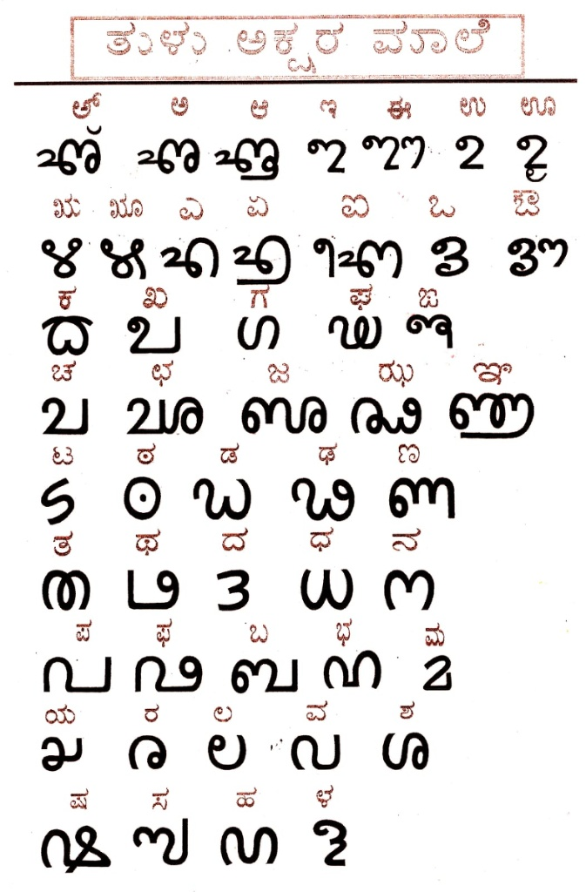

🔍 Search in Tulu Lipi - English - Tulu
⌨️ ಅಕ್ಷರ ಮಾಲೆ - Tulu-Tigalari Keyboard
Tap a key to type • Pronunciation below each key • Works like real keyboard
📖 Image 1 - Authentic Original Tulu Akshara Male

📖 Image 2 - Complete Chart with Numbers 0-9 (Soonyo to Ombattu)

📖 Image 3 - Tulu-Tigalari Keyboard Layout (Exact Functional)

📖 Image 4 - Tulunadu Flag - REAL FLAG (Red with Sun + Moon)
🎉 Sep 18, 2026: Tulu Heritage Corrected!
30/30 GRAND FINALE - TULU HERITAGE CORRECTED
"September 18, 2026 - History Created! Tulu Officially Recognized!"
🎉 Sep 18, 2026 - Tulu 2nd Official
✅ Historic Day - Sep 18, 2026 Karnataka declares Tulu 2nd Official - 50 Year Dream!
🚩 Tulunadu Flag - CORRECTED - Our REAL Pride Flag
🔴 Red Flag with WHITE Sun (Full Moon) + WHITE Crescent Moon - This is Tulunadu Flag
❌ Yellow-Red is Karnataka State Flag (Haladi-Kempu) - NOT Tulunadu
🔴 Maroon colour from Kepula flower - sacred in rituals
📜 Seen in Bhoota Kola & Daiva Sthanas - carries tradition
🚩 Hoisted on Nov 1 Rajyotsava in Dakshina Kannada demanding separate state - Symbol of 2500 years legacy
☀️ Sun = Surya, Moon = Chandra - Eternal existence of Tulunadu
🎭 Tulunadu Madime - Wedding Traditions
💍 Dhare Ceremony - Kanyadhana
🍛 Bale & Moorthha - Feast & auspicious time
👘 Saree & traditional attire
Feedback
We Value Your Feedback!
"Loading today's thought..."